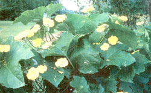
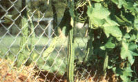

If you want a decorative yard-and-garden plant that tastes as good as it looks, meet . . .
Despite its name, climbing okra (Luffa acutangula) isn't an okra at all. Rather, it's been tagged with that misleading moniker because of its superficial resemblance to garden okra.
So, just what is climbing okra, if okra it ain't? It's an edible gourd, a kissing cousin to the loofah (Luffa cylindrica). And, since all Luffa varieties belong to the family Cucurbitaceae, climbing okra is actually kin to the common cucumber.
Climbing okra is a vigorous vine that uses its long tendrils to cling to supporting structures such as trellises and fences. Depending on soil quality and related growing conditions, this plant's runners can reach 6' to 20' in length, quickly covering its support with a lush canopy of large, dark green leaves. (In warm, moist regions it's sometimes necessary to control the vine's rampant growth by pinching off the tips of runners.)
Luffa acutangula begins producing flowers well before reaching maturity. Blooms are 2-1/2" to 3-1/2" in diameter and resemble butter yellow thunbergia flowers. The blossoms open late in the afternoon and remain open all night. At twilight the flowers almost seem to glow, exuding a sweet fragrance that's ir resistible to moths and late-shift bees. Male and female blooms grow on separate stalks and are easy to tell apart: The males stand out from the foliage on elongated stalks; female flowers hug the stems and are backed by immature fruit.
Once your climbing okra begins to bloom, it's time for you to keep a sharp eye out for young fruit; hidden among the large leaves, they're difficult to spot and can quickly grow too large to be tender. The flesh of the young fruit is snow white with contrasting green ridges, giving a cross-sectioned slice the appearance of a cogwheel.
If picked while still young and tender, vine okra has a sweet, delicate taste and can be used like summer squash. For boiling, stirfrying, or steaming, select fruit that are no more than 6" to 7" long. You can then peel them-or simply slice off the ridges, as the Chinese do.
For batter-frying, choose pods that are 10" to 12" long and 2" or so in diameter. Cut the fruit into 1/4"-thick slices, leaving the peel on to hold the tender morsels together as they cook. Dip the slices in a milk-egg mixture, then in flour or cornmeal before frying.
Harvest the fruit of the climbing okra regularly, even if you have to give some of your crop away. Like other cucurbits, this vining plant should not be allowed to set seed-that is, produce mature fruit-until fall. (Once it does, the vine begins to wither.) Come September, you can allow a few pods to ripen on the vine for next year's seed supply.
If you enjoy craft projects, you might want to let a few pods dry as gourds. They turn a warm light brown and make interesting additions to dried arrangements that are especially appropriate for Thanksgiving. However, if a frost is forecast before your gourds are thoroughly dried, cut them off the vine and hang them by their stems in a warm, dry place indoors.
Climbing okra requires the same growing conditions as melons and cucumbers . . . soil that's rich in organic matter, and plenty of sun. The plants are very sensitive to cold and won't thrive in wet, chilly soil. You can start climbing okra seeds outdoors when nighttime temperatures are staying above 55°F. Or plant them indoors (no more than three weeks before your best guess at what will be the last frost date) by sowing two seeds for each 3"- to 4"-diameter pot. Remove the weaker seedling from each container as soon as the little plants have developed their first set of true leaves.
When the seedlings have been set out in the garden, keep the soil moist at all times. A 6" layer of straw mulch regulates moisture beautifully, as well as helping to keep weeds at bay and preventing low-hanging fruit from touching the soil and rotting. Feed each vine monthly with one cup of a 5-10-5 garden fertilizer (diluted according to the directions on the container). The vine also responds marvelously to fish-emulsion foliar sprays.
Last year I grew climbing okra on the wire surrounding my large, "finished" compost pile. The plants rooted in the cool, rich soil with vigor and grew steadily until fall-even though the summer of 1984 was the hottest in 138 years here on the Highland Rim of Tennessee.
Unfortunately, the same insects and diseases that plague the rest of the cucumber family may also afflict climbing okra. I've had no disease on my vines, but I do fight a running battle with spotted cucumber beetles. Late in last year's hot, dry summer, spider mites became a problem as well. But I've been able to control both pests with a spray of garlic and red pepper diluted in water. (I've not found too many insects that can stand up to that combination!)
In an edible landscape designed to produce as much bounty as beauty, climbing okra is hard to top as a plant that's pretty enough to eat, while tasting every bit as good as it l ooks.
EDITOR'S NOTE: For an in-depth discussion of edible-landscape design, see page 40.
|
 The climbing okra (Luffa acutangula) offers a double bounty of bright, fragrant flowers and delicious fruit, but it isn't really an okra at all-in fact, it's kin to the common cucumber. |
 |
|